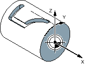
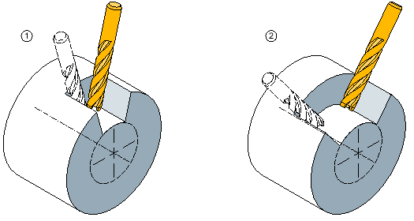
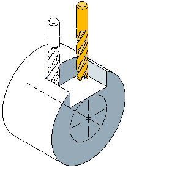

You require the cylinder surface transformation to machine
Longitudinal grooves on cylindrical bodies,
Transverse grooves on cylindrical objects
grooves with any path on cylindrical bodies.
The path of the grooves is programmed with reference to the unwrapped, level surface of the cylinder. The groove can be programmed using line/circle, drilling or milling cycles or with contour milling (free contour programming).
If several Tracyl data sets have been set up, then the corresponding rotary axes can be selected.
If several Tracyl data sets have been set up around a rotary axis, then the corresponding numbers of the data sets can be selected.
Cylinder surface transformation is available in the following versions:
When slot side compensation is deactivated, any type of slot with parallel sides can be machined if the tool diameter is equal to the slot width.
The slot sides are not parallel if the slot width is larger than the tool diameter.
The slot contour is programmed for machining purposes.
① | Longitudinal groove |
② | Transverse groove |
This function is only permissible during path milling with switched-on radius compensation.
When slot side compensation is on, slots with parallel sides are machined even if the slot width is larger than the tool diameter.
The slot contour must not be programmed for machining purposes, but the imaginary center point path of a bolt guided in the slot; whereby the bolt must move along every side. The slot width is determined by parameter D.
Longitudinal groove with parallel limitation
| Note |
Selecting slot side compensationThe slot side compensation selection depends on the transformation type. |
See also:
Cylinder surface transformation
General programming - cylinder surface transformation
Call - cylinder surface transformation